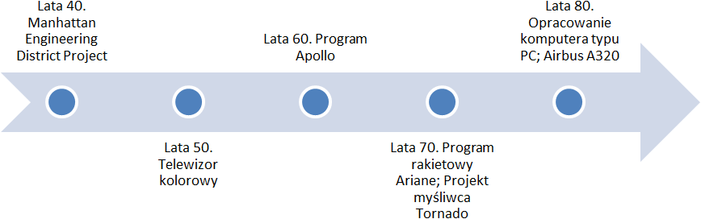
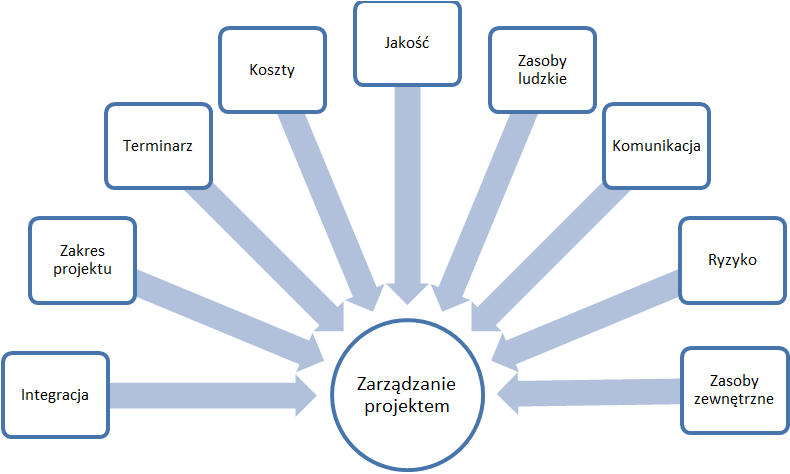

W zarządzaniu terminologia czy nawet niektóre taktyki często zapożyczane są z wojskowości. Podobnie było w przypadku zarządzania projektami. Pierwsze specjalne metody planowania i kontroli realizacji projektów opracowane zostały w 1942 roku przy okazji budowy bomby atomowej (Manhattan Engineering District Project). Oczywiście ze względu na charakter tego projektu metody te nie zostały początkowo upublicznione. Stosowano je jednak w innych projektach wojskowych, jak i kosmicznych.
Pierwsze cywilne zastosowanie metod zarządzania projektami miało miejsce pod koneic lat 40. w związku z programem pomocowym dla Europy po II wojnie światowej (tzw. plan Marshallla). Dalszy rozwój zarządzania projektami związany był z realizacją dużych projektów za równo wojskowych, jak i cywilnych. Wybrane projekty przedstawiono na wykresie 1.1.
Gdy na przełomie lat 50. i 60. zarządzanie poprzez projekty szeroko rozpowszechniło się w zastosowaniach cywilnych, nastąpił znaczny rozwój metod sieciowych, z których największą popularność zyskały CPM (Critical Path Method) i PERT (Program Evaluation and Review Technique). Szerszy opis metody PERT został zamieszczony w rozdziale drugim niniejszej pracy. [1 s.29]
Intensywne prace nad projektami oraz rozwojem teorii kontynuowano w kolejnych latach aż do momentu, w którym napotkano barierę technologiczną. Pojawienie się tanich i wydajnych komputerów na przełomie lat 80. i 90. pozwoliło jednak tę barierę pokonać, co zaowocowało opracowaniem najważniejszych programów z zakresu zarządzania projektami. Pod koniec ubiegłego wieku dodatkowo teorię zarządzania projektami zaczęto wzbogacać o zagadnienia personalne i kulturowe. [1 s.29]
Rys. 1.1.1 Wybrane projekty, które wpłyneły na rozwój zarządzania projektami
Aby bliżej zapoznać się z historią oraz współczesnymi koncepcjami zarządzania, autorka odsyła do prac W.Piotrowskiego i J.Kisielnickiego (Kisielnicki J.: Zarządzanie. Warszawa. Polskie Wydawnictwo Ekonomiczne. 2008, Koźmiński A.K., Piotrowski W. (red.): Zarządzanie. Teoria i praktyka. Warszawa. Wydawnictwo naukowe PWN. 2007), a w tym miejscu chciałaby przedstawić głowne trendy, które miały i nadal mają wpływ na wzrost potrzeby zarządzania poprzez projekty. Są to m.in.: [2 s.13-17]
Poza przedstawionymi wyżej trendami do rozwoju zarządzania projektami przyczyniły się przede wszystkim potrzeby planowania i kontroli realizacji wielkich projektów niemożliwych do zarządzania za pomocą tradycyjnych metod. [1 s.28]
Obecnie zarządzanie projektami stanowi samodzielną i kompletną dziedzinę nauki o zarządzaniu. Praktyczny rodowód zarządzania projektami sprawił, że poza rozlicznymi akademickimi opracowaniami teorii zarządzania projektami powstaje wiele praktycznych poradników i arykułów na ten temat. Zarządzanie projektami dysponuje sprawdzonymi metodami oraz narzędziami, które wspomagają prace menedżera. Sam fakt, że pojawiła się grupa zawodowa project manager’ów świadczy o rosnącym znaczeniu tej metody zarządzania w organizacjach. Coraz częściej uczelnie wyższe podejmują się kształcenia koordynatorów projektów. Dodatkowo liczne stowarzysznie zrzeszające praktyków, jak i teoretyków zarządzania projektami również zajmują się propagowaniem wiedzy z tego zakresu. Najbardziej znanym i cenionym stowarzyszeniem Project Manager’ów jest Project Management Institute.
Rys. 1.1.2 Kluczowe obszary i procesy zarządzania projektami
Za Project Managent Institute przyjmując zarządzanie projektami jest to zastosowanie dostępnej wiedzy, umiejętności, narzędzi i technik w celu spełnienia albo wręcz przewyższenia wymagań i oczekiwań zleceniodawców projektu. [3 s.6] Jest to szerokie podejście do zagadnienia zarządzania projektami. Ujmując kwestię nieco wężej, bardziej praktycznie zarządzanie projektami jest to zespół działań kierowniczych (planowanie, organizowanie, koordynowanie, motywowanie, kontrolowanie) związanych z realizacją według ustalonych zasad i metod projektu, którego zakres jest określony, a środki na jego realizację ograniczone. [1 s.26] Powyżej przedstawiono zestawienie kluczowych obszarów zarządzania projektami według PMI.
[1] Trocki M.: Zarządzanie projektami. Warszawa. Polskie Wydawnictwo Ekonomiczne. 2009.
[2] Pawlak M.: Zarządzanie projektami. Warszawa. Wydawnictwo naukowe PWN. 2006.
[3] Duncan W.R.: A Guide to the Project Management Body of Knowledge. U.S.A. Project Management Institute. 1996.